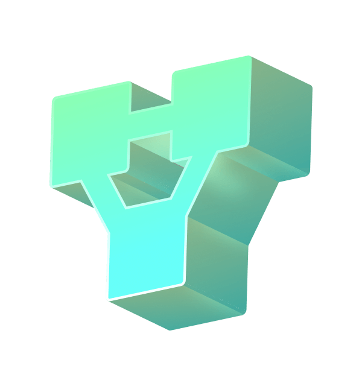

A leveraged token starting at 3x,although the exact return and exposure are several times that of the underlying.These xTOKENs represents the share of the subordinated tranche.

bToken-earn yield
In most cases,bTOKENs guarantees the principal and interest in base currency(e.g.USDT).bTOKENs likewise represent the share of the senior tranche.
Create with any token
As long as the underlying asset can be traded on a DEX,leveraged tokens of the token can be issued.Teeter uses the spot price as the value of the underlying asset and hence manages the asset according to the latest price.
Why tokenized tranche?
A leveraged token starting at 3x,although the exact return and exposure are several times that of the underlying.These xTOKENs represents the share of the subordinated tranche.
A leveraged token starting at 3x,although the exact return and exposure are several times that of the underlying.These xTOKENs represents the share of the subordinated tranche.
A leveraged token starting at 3x,although the exact return and exposure are several times that of the underlying.These xTOKENs represents the share of the subordinated tranche.